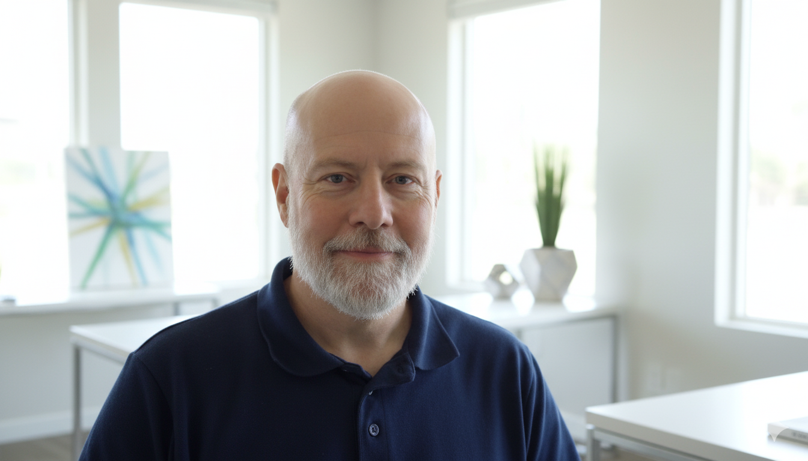

Founder & Agentic Biologist

Tom spent 30 years as a research scientist in the pharmaceutical and biotechnology industry. He is a biologist that is cross-trained in computing, data science (machine learning) and artificial intelligence. He worked at several major pharmaceutical companies, namely Bristol-Myers Squibb, Novartis Institutes for Biomedical Research, Pfizer and Eli Lilly. Tom also spent a few years in the startup Biotech realm at 3 different firms. Currently he is Founder and Chief Agentic Biologist at statespace.bio, an open source biology research organization. Tom loves to use innovative new technologies to solve interesting and important problems.
Three decades as a research scientist spanning major pharmaceutical and biotech organizations.
BMS, Novartis, Pfizer, Eli Lilly, and three startup ventures — from big pharma to early-stage innovation.
All results and methods released publicly so the broader scientific community can build on this work.